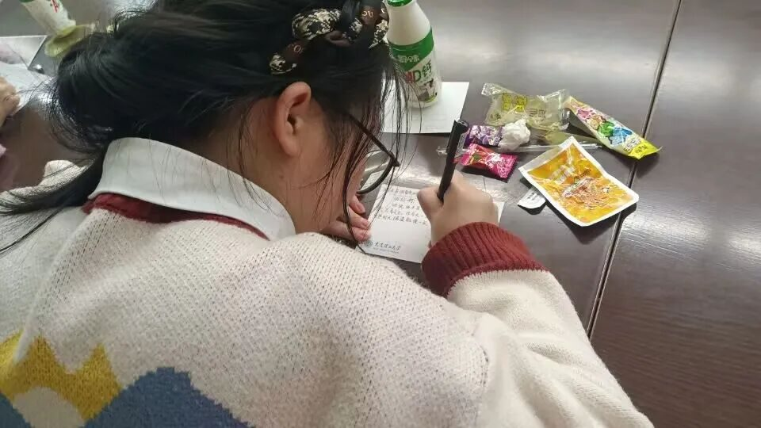
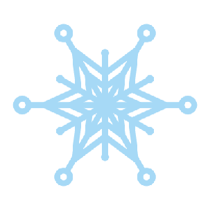
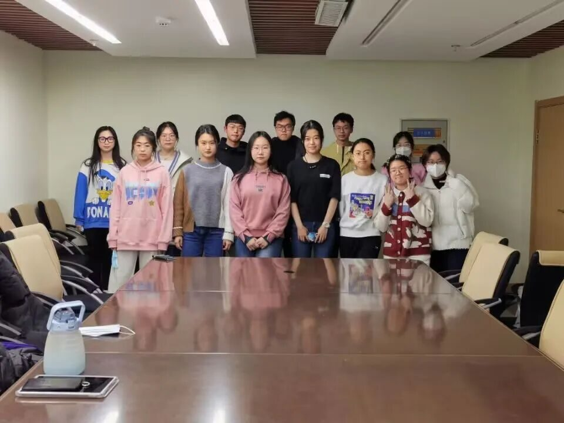

【行者无疆 踏冰逐梦】 团队见面会


行者无疆 踏冰逐梦
北风其凉 雨雪其雱
在这寒冬之夜
新一期的行者们荟萃一堂
少年们炙热的心碰撞在一起拿过接力棒
继往开来 踏上新的旅途

殷殷嘱托
共展蓝图
破冰交流
各抒己见
到了见面会的尾声，行者们合影留念，定格旅途的起点。前路浩浩、素心旦旦，行者们怀抱着激情与热忱走向冬奥精神和大工精神探索之路。

END
“风劲潮涌，自当扬帆破浪；
任重道远，更需策马加鞭。”
愿我们
不畏风霜 拥抱冰雪
布帆无恙 不虚此行
第十二期行者无疆
欢迎大家来到这场冰雪之约


行
者
这个冬天我们一起踏冰逐梦！
来源 | 行者无疆实践团
图片 | 行者无疆实践团
文字 | 张霖茜
排版 | 周奕彤
审核 | 崔雨琪